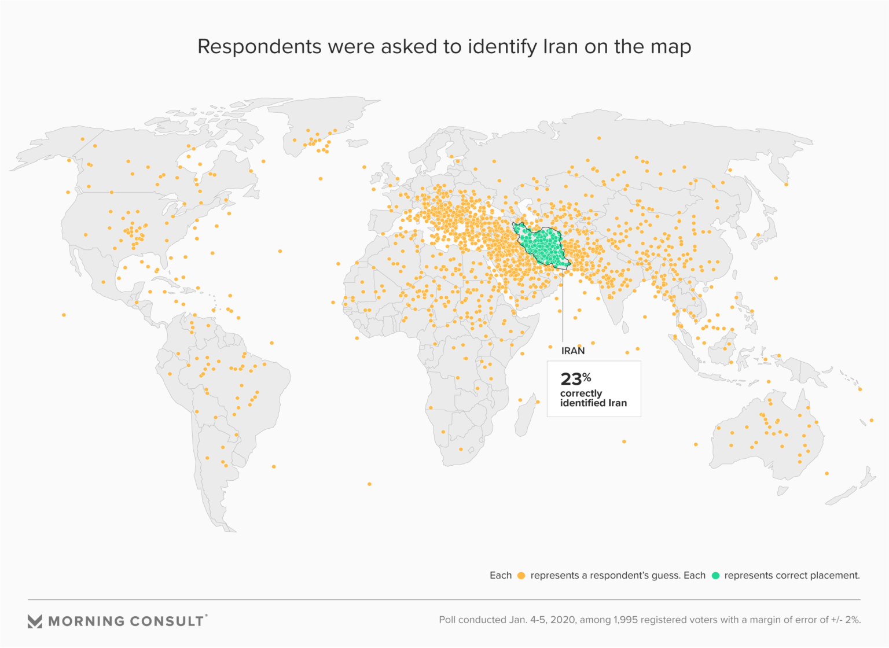
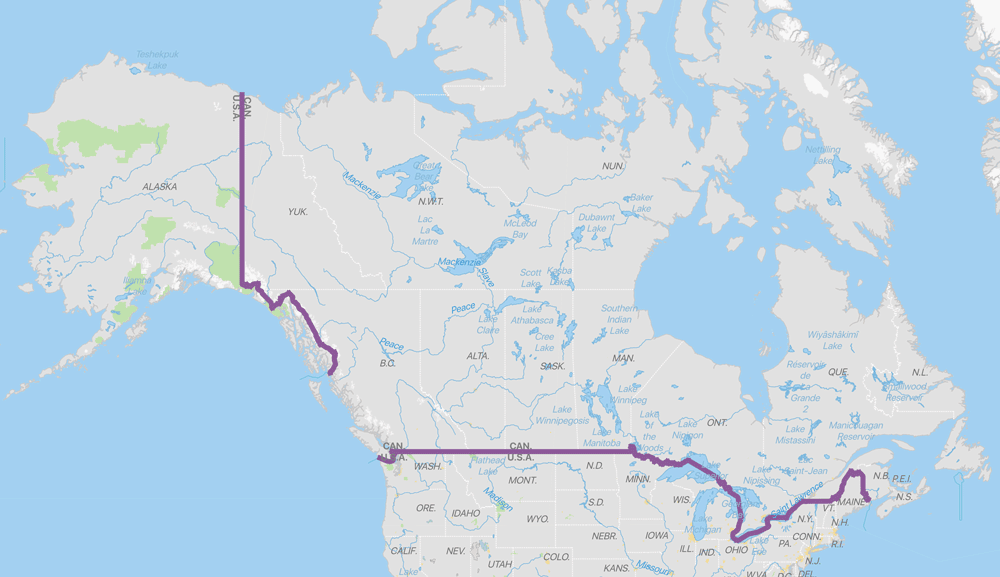
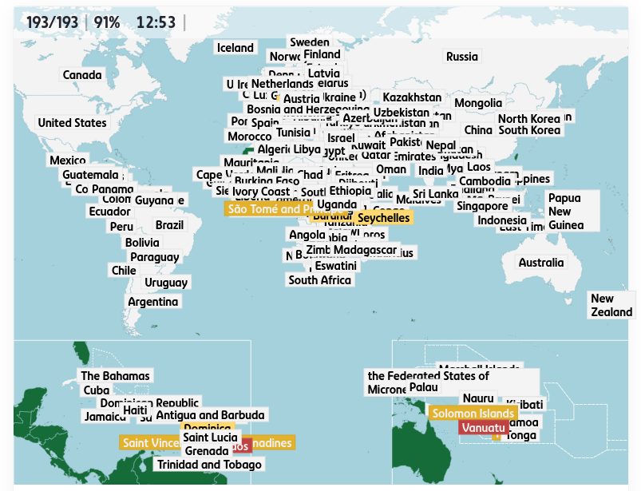

I was just playing globle when I pondered whether or not the game would be playable for normies—people who don't know the names and relative locations of every country. Considering the known geographic illiteracy of Americans, I'd expect that many people would type "USA", "MEXICO", and then give up after the game refuses to take "AFRICA" as a country. I mean, just look at this map! It's embarrasing really.

Surely there's no way right? The people they interviewed couldn't possibly be from around here; they're probably from Texas or something. I couldn't bear thinking that I might know another human being who would actually guess that Italy was Iran. Still, I had to make sure.
I began compiling a sample of questions to ask my classmates at school what they thought the answers were. Here are the results:
The First Test
What two countries share the world’s longest land border?
Their response was: (hover to reveal)
Russia and China.
The correct answer was:
The United States and Canada.
Which is larger? Russia or China?
Their response was:
Russia.
The correct answer was:
Russia.
What is the 5th largest country?
Their response was:
Mexico...or South Africa?
The correct answer was:
Brazil.
What is the most populous country in the world?
Their response was:
China... wait no it's India now.
The correct answer was:
India.
Dublin is the capital of what country?
Their response was:
Denmark? I don't know.
The correct answer was:
Ireland.
That last one reminds me of a good dad joke.
Why is Ireland one of the richest countries?
Because its capital's always Dublin!
Jokes aside, it is unfortunate that despite living so close to the largest land border between two nations, their guess was thrown elsewhere. I mean, it's a straight line!

It's time I got to the bottom of this.
The Interview
I sat down with our local Geographic and Flag extraordinaire, Robby Blastic, to try to figure out what was up.
[Me] Why are people so bad at Geography, Robby?
[Robby] Because they're stupid.
But what causes the stupidity to arise within the American populous?
Umm... they have a bad memory.
Is that as simple as it is?
If you have a bad memory you're not gonna remember where all of the stuff is. Also we don't really learn it in school.
You think it has something to do with the US education system, given that it is a pretty American thing.
We've learned the continents multiple times.
What's a geography fact you'd like to enlighten us with?
Well, did you know that Portugal's actually in Europe and not South America...
I did know that.
...Anna Blastic?
She knows that now, but it did take us asking her quite a few times before she finally learned it so we would stop making fun of her. Maybe that's how we make people smarter; we just have to insult them about how dumb they are until they decide to stop being dumb.
You could play the Yakko's World song all over and eventually people will remember it.
But that song is quite outdated.
You could play the more modern geography songs.
That would be more effective.
And then once you know all the countries you'd automatically pick up on more of the details. You'd hear something on the news and be like "oh, I've heard of that country", so then you'd remember it better.
Cool.
Maybe interviewing a middle schooler right before his bedtime wasn't the best idea, but we managed to get somewhere in the end.
Testing Myself
I decided to take Robby's idea to heart, and I practiced my geography again using Seterra without any skipping. Here's how I did:

It's crazy how much knowledge I have been able to retain since the ages it's been since I last took this test. With an hour or two I'd easily get that score up to 100. Anyways, it's time I headed out to single handedly reform the American education system.
On second thought it's pretty late, I should probably just go to bed.